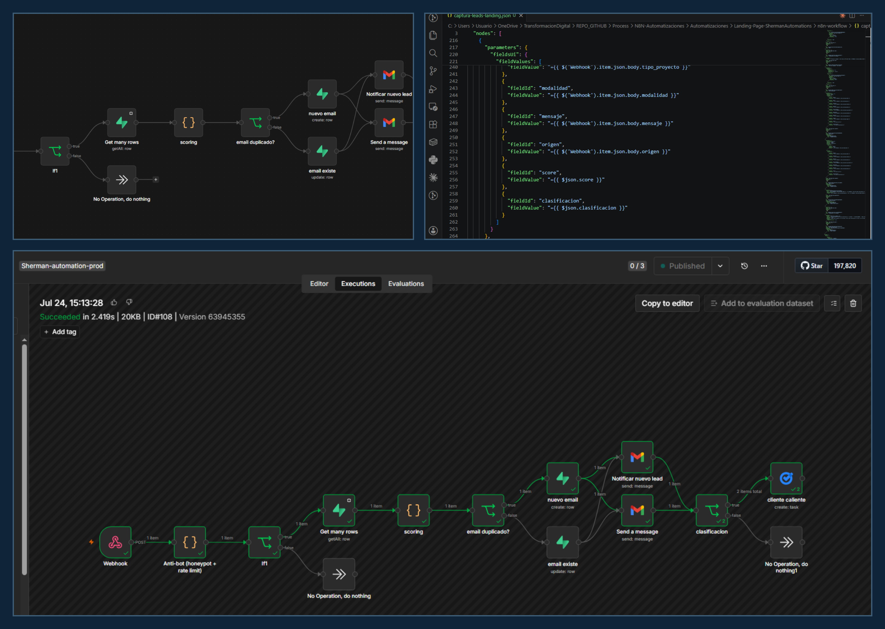
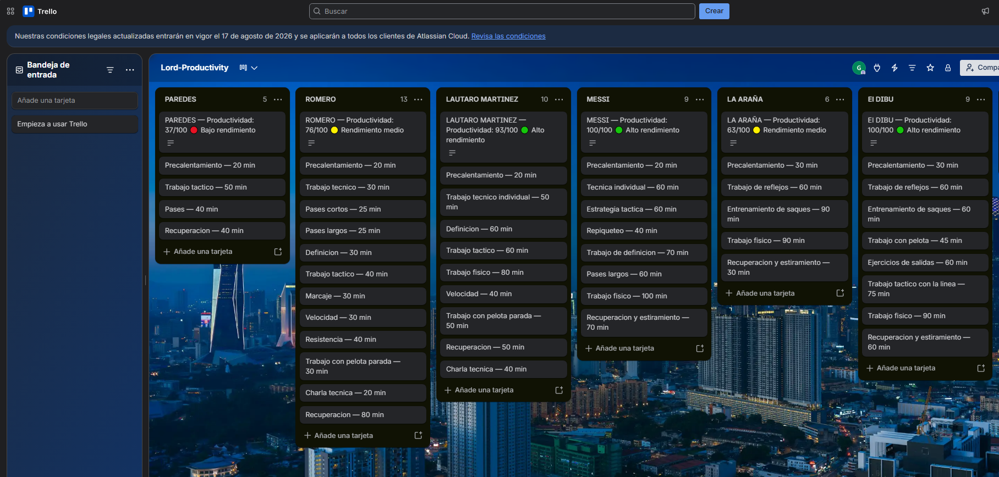
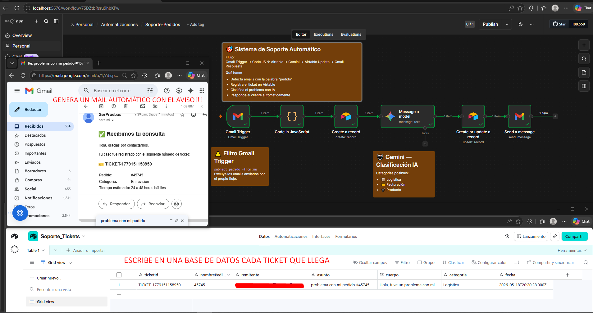
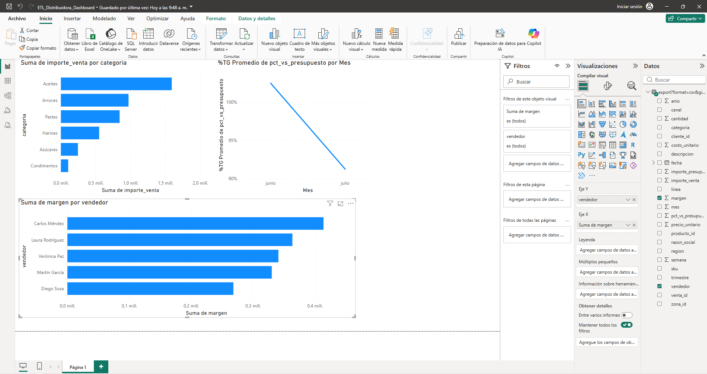

Ingeniero
Germán P. MorvilloIng. Industrial
15+ años optimizando procesos reales, ahora aplicados a n8n, IA y automatización — con la mirada de un ingeniero industrial, no la de alguien que solo conecta APIs.
Cada servicio parte del mismo lugar: entender el proceso real antes de tocar una sola herramienta.
Portfolio en público — cada caso, con su problema, su enfoque y su resultado real.


Un supervisor con 6 personas a cargo necesitaba saber, todos los días, quién trabajó cuánto y en qué. Este flujo con n8n lee reportes diarios, calcula un score y arma un tablero Kanban solo, todos los días a las 18:00.

Un email de un cliente con un problema de pedido se lee, se clasifica con IA (Gemini) y se responde solo — con ticket, categoría y tiempo estimado, sin que nadie lo toque.

Una distribuidora consolidaba ventas y presupuesto a mano cada lunes (45–60 min). Este pipeline con n8n extrae, corrige, cruza y calcula KPIs, carga el resultado en un Data Warehouse y avisa por Slack.
Soy Germán Pablo Morvillo, Ingeniero Industrial con más de 15 años trabajando en mejora de procesos — Lean, Six Sigma, reducción de variabilidad, eliminación de desperdicio. Ese fue mi oficio antes de que existiera una herramienta no-code para cada cosa.
Hoy aplico ese mismo criterio a la automatización, la IA y la transformación digital: entender el proceso de negocio antes de tocar una sola herramienta.
Estoy construyendo mi portfolio en público — cada automatización documentada, publicada y con sus aprendizajes reales, errores incluidos.
Contame brevemente tu proceso o proyecto — te respondo directamente, sin intermediarios.